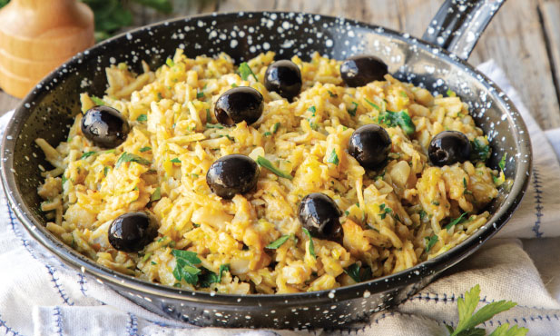

Bacalhau a Bras

Ingredients:
- shredded cod 400g
- olive oil 2 tbsp.
- garlic 2 unid.
- onion 100g
- leek 100g
- courgette 200g
- salt
- pepper
- eggs 4 unid.
- potato chips straw 150g
- fresh parsley
- black olive 40g
Steps:
- Cover the cod with boiling water.
- Pour the oil into a wide, deep, non-stick frying pan and heat it with the peeled and chopped garlic cloves, the onion and the leeks cut into thin slices. Cook over medium heat, stirring occasionally.
- At the same time, wash the courgette and grate it into threads on the widest sieve of the grater. Add it to the skillet with the vegetables and season with half the salt and freshly ground pepper.
- Meanwhile, drain the cod and break it into thin flakes. Add it to the vegetables in the skillet. Mix well and cook for about 10 minutes over medium to high heat, stirring occasionally.
- Crack the eggs into a bowl, season them with the remaining salt and pepper and beat them with a fork until they are well dissolved.
- Mix the straw potatoes in the cooking and add the beaten eggs, mixing them well. Cook for about 5 minutes letting the eggs cook until they are creamy.
- Salpique generosamente com salsa picada e decore com as azeitonas.
Octopus cataplana
Ingredients:
- sweet potatos 400g
- salt
- olive oil
- garlic 3 unid.
- onion 100g
- green pepper 80g
- red pepper 100g
- tomatos 250g
- chilli sauce
- mussel 300g
- fresh coriander
- cooked octopus 300g
- limão 100g
Steps:
- Wash the potatoes very well and cook them in water seasoned with salt until they are soft.
- Heat the oil in a cataplana, add the peeled and sliced garlic cloves, the peeled onion and cut into half rings.
- Clean the peppers from seeds and cut them into strips. Cut the tomato into cubes. When the onion is soft, add the peppers, tomato and chilli sauce, stirring occasionally for about 10 minutes.
- In the meantime, scrape the mussel shells very well, remove the beards and place them in the cataplana. Add a sprig of coriander, close the cataplana and cook for about 10 minutes over medium heat.
- Peel the potatoes and cut them into slices.
- Arrange the potato slices and octopus tentacles in the cataplana, close again and cook for another 5 minutes.
- Open the cataplana on the table and add the lemon cut into wedges and some fresh coriander leaves.